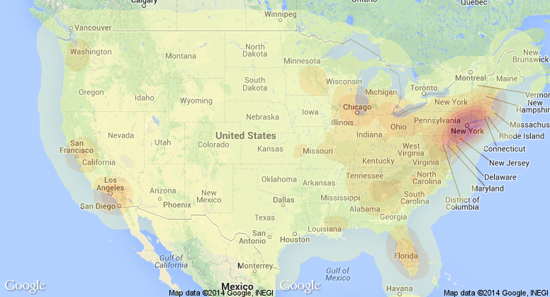

Surname:
?
The distribution dropdown allows selection the
distribution type of the map. The regular distribution
shows the most dense areas with no modifications
while the probabilstic distribution shows where a
person with that name is most likely to be met when
compared to the US's overall distribution. Captured Image
distribution type of the map. The regular distribution
shows the most dense areas with no modifications
while the probabilstic distribution shows where a
person with that name is most likely to be met when
compared to the US's overall distribution. Captured Image
Income Distribution:
?
The colored histogram displays the income
distribution for the inputted name. The bins
represent the Census's distribution bins for
census tract areas. Hover over a bin to see
the bin's range and the specific percentage
of people within that bin's range. Click on a
range to find similar names according to that
bin's value.
distribution for the inputted name. The bins
represent the Census's distribution bins for
census tract areas. Hover over a bin to see
the bin's range and the specific percentage
of people within that bin's range. Click on a
range to find similar names according to that
bin's value.
Name Distribution Heatmap:
?
The map displays the most dense areas for the
inputted name based on the distribution type
selected. The regular distribution shows the
most dense areas with no modifications while
the probabilstic distribution shows where a
person with that name is most likely to be met
when compared to the US's overall distribution.
inputted name based on the distribution type
selected. The regular distribution shows the
most dense areas with no modifications while
the probabilstic distribution shows where a
person with that name is most likely to be met
when compared to the US's overall distribution.
Distribution Tool:
?
The distribution tool allows you to create a custom
distribution. Click on a bin to increase the bin by 4%
and decreasing all other bins by an equal proportion.
Hover over a bin to see it's current value and the
corresponding range for that bin. In the word cloud
type selection, select Distribution Tool Similarity
to find names with similar income distributions
according to the input in this tool. Press the reset
button to reset the tool to the original distribution.
The similarity word cloud will update two seconds
after the tool is changed as long as Distribution
Tool Similarity is the wordle type.
distribution. Click on a bin to increase the bin by 4%
and decreasing all other bins by an equal proportion.
Hover over a bin to see it's current value and the
corresponding range for that bin. In the word cloud
type selection, select Distribution Tool Similarity
to find names with similar income distributions
according to the input in this tool. Press the reset
button to reset the tool to the original distribution.
The similarity word cloud will update two seconds
after the tool is changed as long as Distribution
Tool Similarity is the wordle type.
Similar Names Word Cloud Type:
?
The word cloud displays the most similar names
to the inputted name, with the largest and darkest
colored names being the most similar to the input.
For the map comparisons, the core map similarity
is based on core area similarities and the L2 map
similarity is based on L2 similarity. The income
similarity compares the income distributions between
names. The distribution tool similarity generates
similar names based on the distribution tool input.
Click on a name to load thatname's distribution.
to the inputted name, with the largest and darkest
colored names being the most similar to the input.
For the map comparisons, the core map similarity
is based on core area similarities and the L2 map
similarity is based on L2 similarity. The income
similarity compares the income distributions between
names. The distribution tool similarity generates
similar names based on the distribution tool input.
Click on a name to load thatname's distribution.
Highlight a black
?
Help will display near
the question mark. to view help and descriptions about a part of the page. Best viewed at 1600x900 resolution or higher, in Chrome (Version 33 or higher) or Firefox (Version 24 or higher).
the question mark. to view help and descriptions about a part of the page. Best viewed at 1600x900 resolution or higher, in Chrome (Version 33 or higher) or Firefox (Version 24 or higher).
Copyright © 2014 Arizona State University
Forename:
Captured Image
Wordle Type: